Cada respiración cuenta.
La Liga Antituberculosa Colombiana y de Enfermedades Respiratorias – LAC trabaja junto al Gobierno Nacional para prevenir, investigar y educar frente a la tuberculosis y otras enfermedades respiratorias.
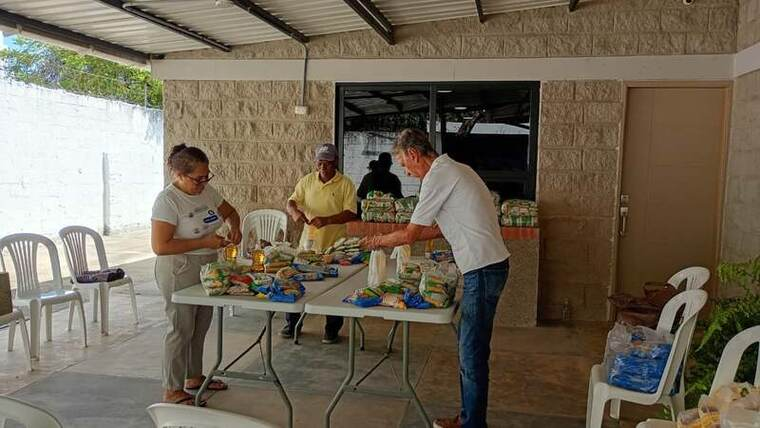
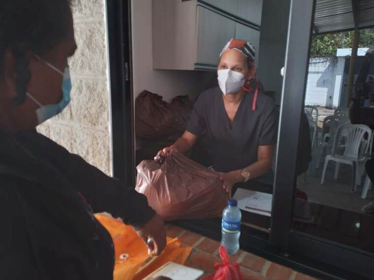
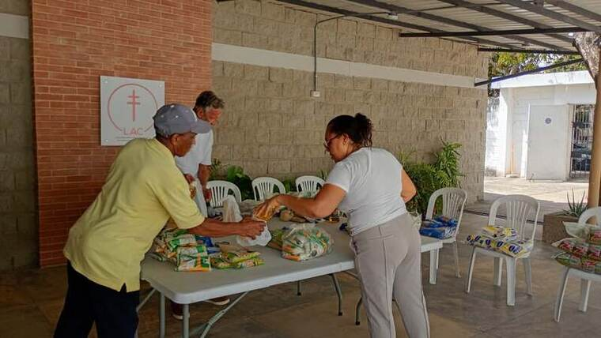
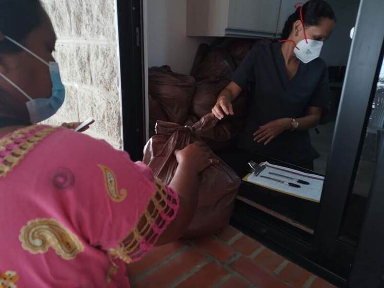
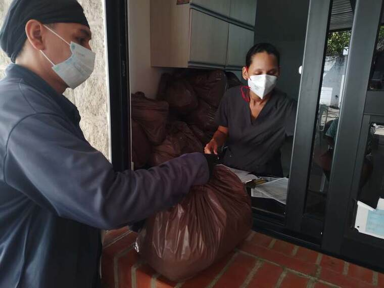
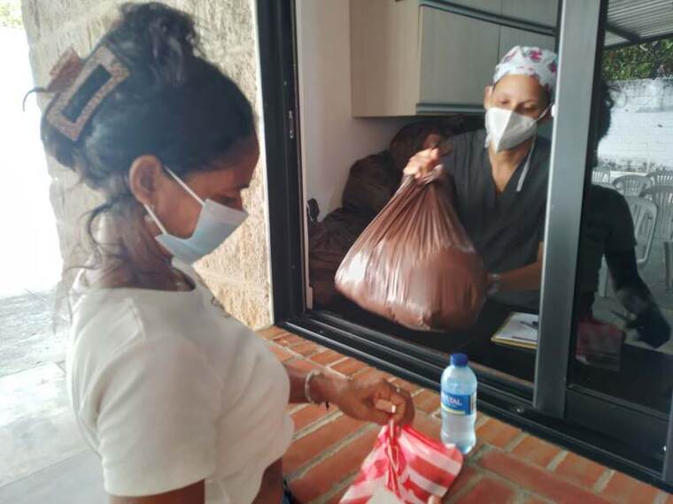
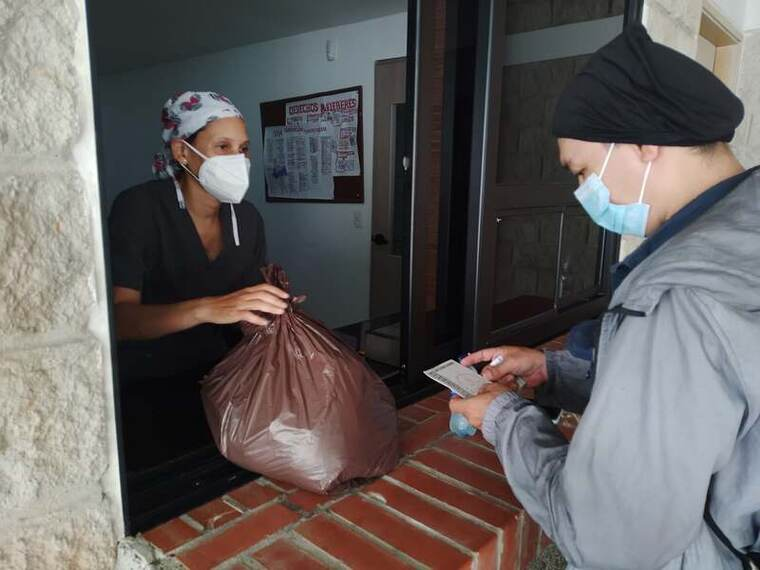
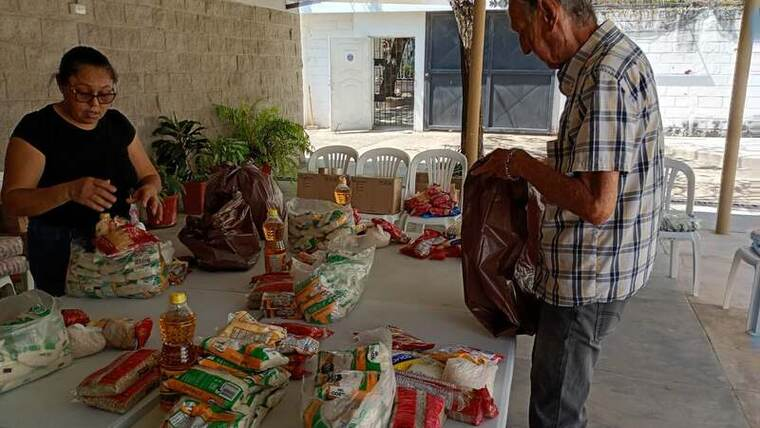
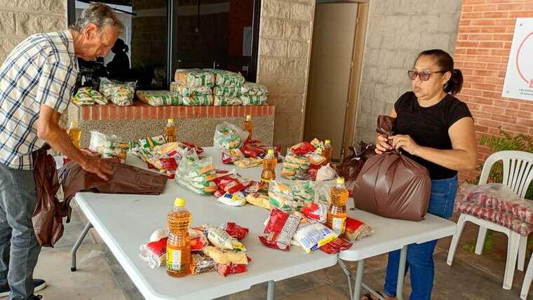
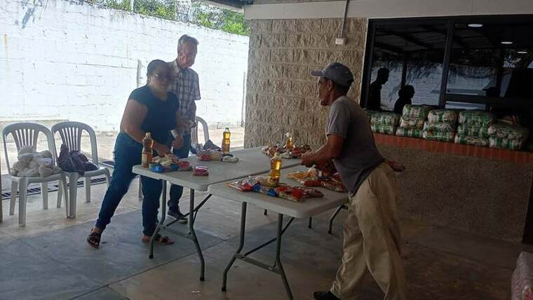
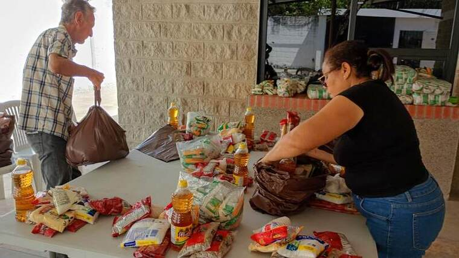
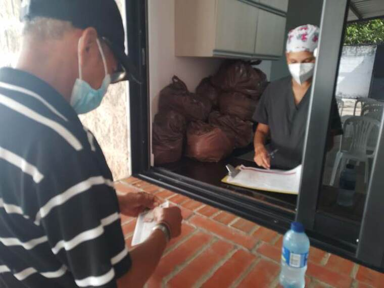
Asambleas nacionales
XX Asamblea Nacional
Realizada en el Círculo Social de Ibagué, reunió a los comités seccionales de todo el país bajo la presidencia de Guido Chaves Montaño, con la comité del Tolima, Marina Álvarez de Luengas, como anfitriona.
Delegación del Comité Atlántico
Voluntarias del Comité Seccional Atlántico representando a la institución en una de las Asambleas Nacionales de la LAC, portando el uniforme distintivo junto al estandarte de la Liga.
Asamblea Nacional 85 años
La delegación del Comité Seccional Atlántico participó en la Asamblea Nacional realizada en Bogotá, en el marco de la celebración de los 85 años de la LAC, donde recibió varios de los reconocimientos de esta página.
Haz tu donación aquí
Cada aporte ayuda a financiar actividades de prevención, investigación y educación frente a la tuberculosis y otras enfermedades respiratorias.
Hacer una donación